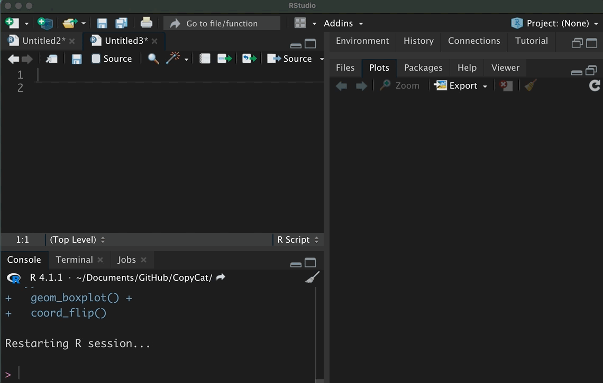
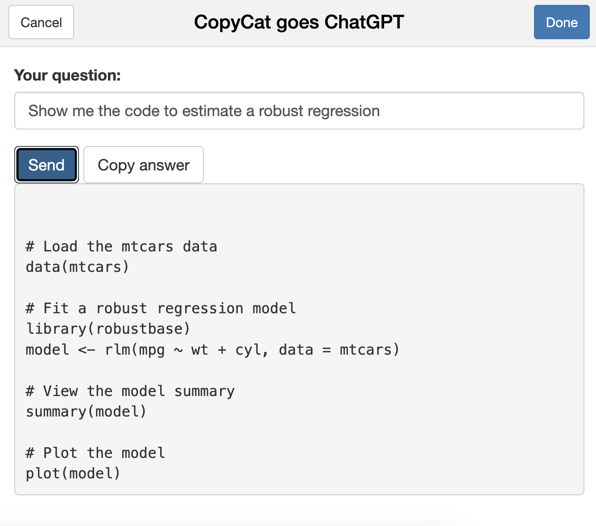
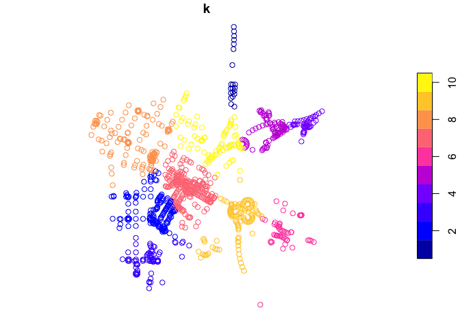

CopyCat is a small package to copy, paste, and manage code snippets. CopyCat comes with code snippets (minimal examples) that run with implemented data. In addition, CopyCat provides an interface to ask ChatGPT questions about R. CopyCat was built as a personal package for the lazy cats, but it may help (new) R users to learn R.
Installation
Install CopyCat from my GitHub account with:
devtools::install_github("edgar-treischl/CopyCat",
build_vignettes = TRUE)Explore the Copycat code snippets
CopyCat comes with a data (CopyCatCode) that includes code snippets from the cheat sheets of the ggplot2, tidyr, and more packages from the tidyverse. The data include the package name, the function name, and the code of the minimal example.
Copy a code snippet with the copycat_addin() which runs a graphical interface. Pick a function and press the insert code button. RStudio inserts the code for you. The gif shows how the RStudio addin works.

Get help from ChatGTP
The package has a built-interface to get help from ChatGTP. To connect with ChatGTP, go to openai, create an account and generate an API key. Next create an object called (gtp_api) for your API key or use the keyring package to save the key savely.
#SET API Key as gtp_api
gtp_api <- "your-key"
#Or store it with keyring
keyring::key_set("gtp_api")After your API key is set, you can sent your questions via the ask_gpt() funciton. I primed ChatGTP to be your R tutor. Thus, ChatGTP will returns solution with R and returns them via your console. For example:
#Ask GPT for help
library(copycat)
ask_gpt(message = "How do I estimate a robust regression?")
#>
#>
#> To estimate a robust regression in R and RStudio, you can use the robustbase package. This package provides functions for robust statistics, including robust regression.
#>
#> For example, using the mtcars data set, you can use the rlm() function to fit a robust regression model. The following code shows how to fit a robust regression model with mpg as the response variable and wt and hp as the predictor variables:
#>
#> library(robustbase)
#>
#> # Fit a robust regression model
#> model <- rlm(mpg ~ wt + hp, data = mtcars)
#>
#> # Print the model summary
#> summary(model)
#>
#> The output of the summary() function will show the estimated coefficients, standard errors, and other model statistics.
#>
#> You can also use the iris data set to fit a robust regression model. The following code shows how to fit a robust regression model with Sepal.Length as the response variable and Sepal.Width and Petal.Length as the predictor variables:
#>
#> library(robustbase)
#>
#> # Fit a robust regression model
#> model <- rlm(Sepal.Length ~ Sepal.Width + Petal.Length, data = iris)
#>
#> # Print the model summary
#> summary(model)
#>
#> Again, the output of the summary() function will show the estimated coefficients, standard errors, and other model statistics.Consider the help files to adjust the text model, the number of maximal tokens (maxtoken), the temperature (tempvalue) and further ChatGTP paramters. Moreover, there is no need to remember the function and options. Just use the AskGTP addin as the next illustration shows. It’s a small interface to send message to Chat GTP.

As outlined, I started to build CopyCat as a personal package. It provides more features but some of its features are still experimental stage. For example, use the copycat_random() in your start up to explore functions from packages that have been installed on your computer. It randomly picks a function example that is installed on your computer.
#Get the code example of a random function from an installed package
copycat_random()
#Package and function of the day: concaveman::concaveman
library(concaveman)
#concaveman: A very fast 2D concave hull algorithm.
#Examples:
data(points)
polygons <- concaveman(points)
plot(points)
plot(polygons, add = TRUE)
Inspect the Get started vignette for more information.